Android Studioのダウンロードとインストール
Androidの開発環境として用意されているAndroid Studioのダウンロードとインストール方法について解説します。2018年10月現在の最新バージョンはAndroid Studio 3.2です。
Android Studioをダウンロードする
最初にAndroid Studioをダウンロードします。次のURLへアクセスして下さい。
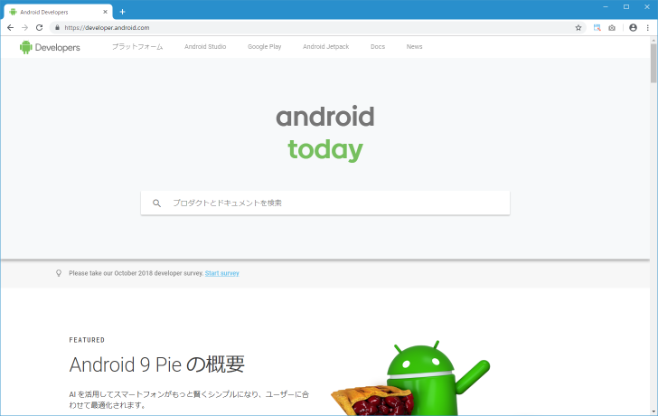
画面上部に表示されている「Android Studio」をクリックして下さい。
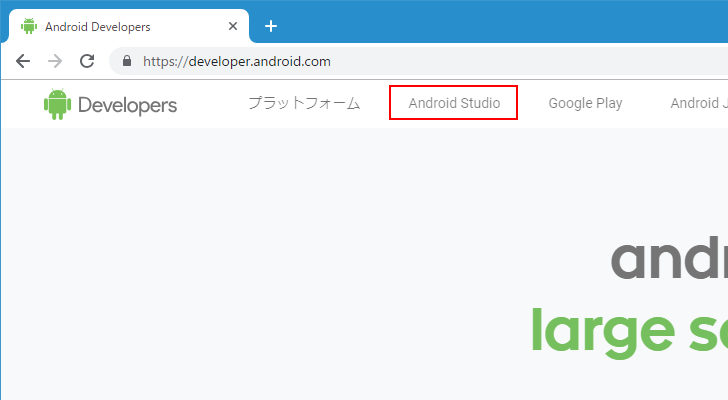
Android Studioのダウンロード用ページが表示されます。画面中央の「DOWNLOAD OPTIONS」をクリックして下さい。
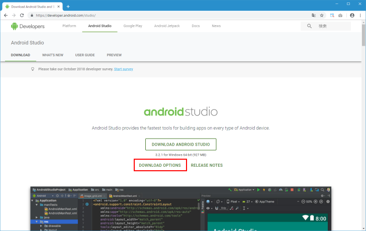
OS毎のダウンロード用のリンクが表示されます。
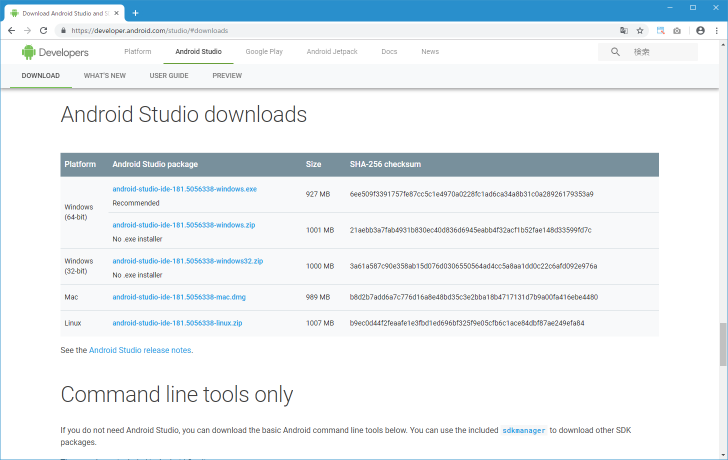
今回はWindows10(64bit)環境へのインストールを行いますので、Windows(64-bit)のところに表示されている「android-studio-ide-181.5056338-windows.exe」をクリックして下さい。
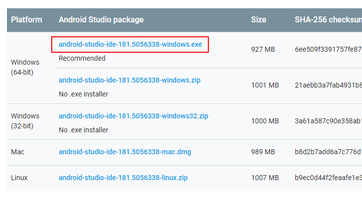
「利用規約」が表示されます。
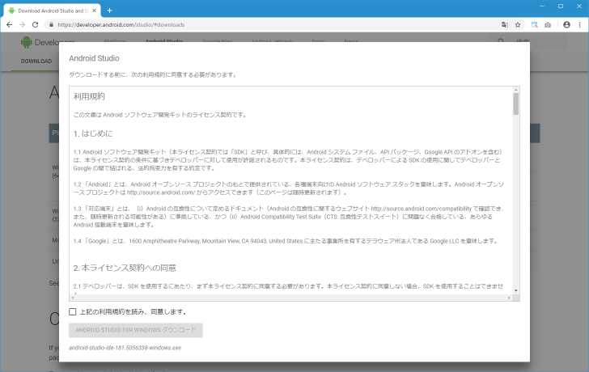
よく読んで頂き、同意できる場合には画面左下の「上記の利用規約を読み、同意します。」にチェックをして下さい。その後で「ANDROID STUDIO FOR WINDOWS ダウンロード」をクリックして下さい。
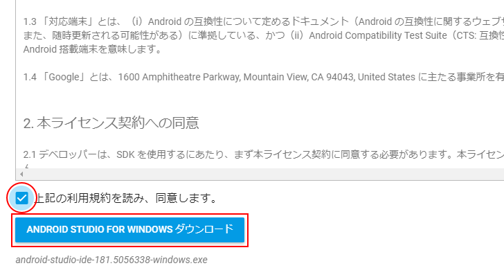
インストール用ファイルのダウンロードが開始されます。任意の場所に保存しておいて下さい。
Android Studiをインストールする
続いてインストールを行います。ダウンロードした「android-studio-ide-181.5056338-windows.exe」ファイルをダブルクリックして下さい。次の画面から開始されます。「Next」をクリックして下さい。
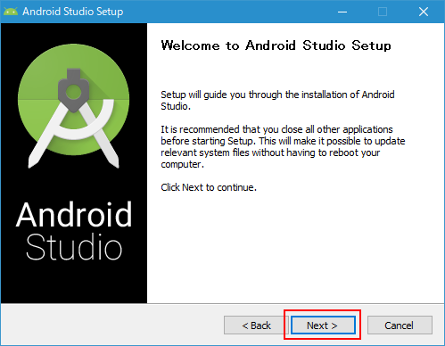
インストールするコンポーネントを選択します。「Android Virtual Device」はチェックをしたままにして下さい。「Next」をクリックして下さい。
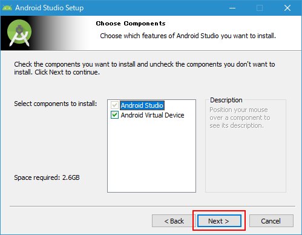
Android Studioをインストールするディレクトリを指定します。今回は少し変更しています。指定が終わりましたら「Next」をクリックして下さい。
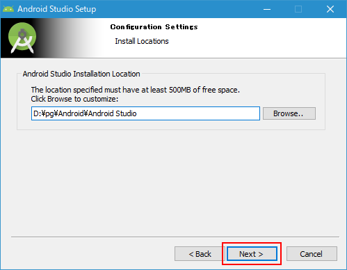
Windowsのスタートメニューに登録する名前を指定または選択します。今回はデフォルトのままです。登録しない場合は「Do not create shortcuts」にチェックして下さい。指定が終わりましたら「Install」をクリックして下さい。必要なファイルのダウンロードとインストールが開始されます。
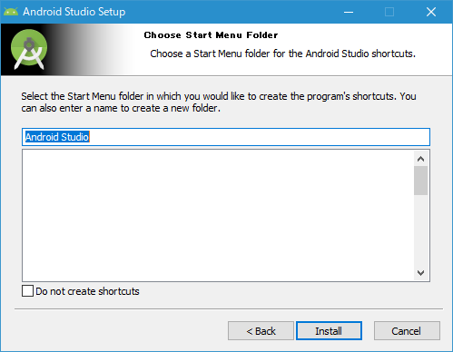
次のように表示されればインストールは完了です。「Next」をクリックして下さい。
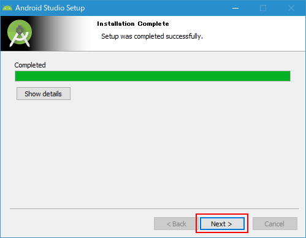
最後に次の画面が出てAndroid Studioのインストールは全て完了です。「Finish」をクリックして下さい。
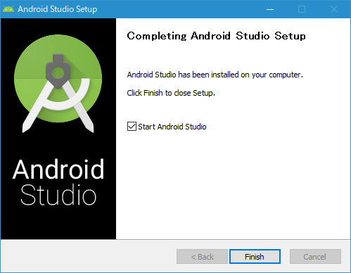
最後の画面で「Start Android Studio」にチェックが入っているとAndroid Studioが起動します。初めて起動した時にどのように表示されるかは次のページで解説します。
( Written by Tatsuo Ikura )

著者 / TATSUO IKURA
初心者～中級者の方を対象としたプログラミング方法や開発環境の構築の解説を行うサイトの運営を行っています。